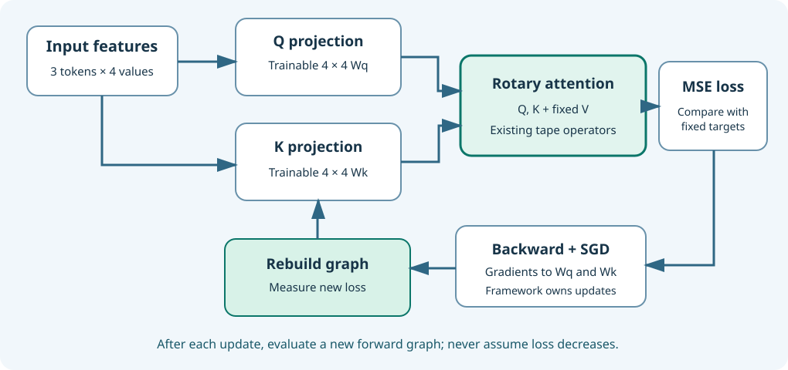

What you will build
You will run a small, genuine training exercise using the existing Umicom Framework tensor tape. The exercise learns two numerical projection matrices used by rotary attention—the query (Q) weights and the key (K) weights. We deliberately use three input tokens, four numerical channels, and two attention heads, so we can inspect every stage without a giant model or a graphics card.
1. Training is more than calculating an output
In previous lessons, our rotary attention could perform a forward pass and calculate gradients. A complete training step has one more responsibility: update the trainable weights according to those gradients, then recalculate the loss with the updated weights. An update is a measurable action, not proof that a model has learned language.

2. Read every shape in plain English
| Object | Shape | Explanation |
|---|---|---|
| Input features | 3 × 4 | Three token rows with four numerical features each: 12 values. |
| Query weights Wq | 4 × 4 | Sixteen trainable numbers that project features into queries. |
| Key weights Wk | 4 × 4 | Sixteen more trainable numbers for keys. |
| Query and key projections | 3 × 4 | Three rows of four computed numbers each. |
| Attention heads | 2 heads × 2 channels | Each head processes its own pair of channels. |
| Values and desired output | 3 × 4 | Fixed examples for this bounded teaching experiment. |
Shapes matter because matrix multiplication only works when its adjoining dimensions match. A 3×4 matrix multiplied by a 4×4 matrix produces a 3×4 result. For a gentle example of this rule, see Maths Unit 4.
3. Follow one training step
The Framework performs UmiAiTrainingMatmul for queries and keys, then calls UmiAiTrainingRotaryTapeAttention. This existing component rotates the appropriate query and key pairs and delegates causal attention to the original Framework tape. It never rewrites the tape's softmax or gradient implementation.
X means the input features, Wq and Wk are the trainable weight matrices, and Q and K are the computed projections. “×” here is matrix multiplication, not multiplication of two ordinary scalar numbers.
Attention produces another 3×4 matrix. We compare it with a fixed target by taking the mean squared error.
Σ means “add the results”, prediction is one of twelve output numbers, target is its desired value, and 12 is the count of numbers. To practise with just two outputs before tackling twelve, open Maths Unit 5.
After loss calculation, UmiAiTrainingBackward computes derivatives of this loss with respect to the two weight matrices. The C23 service calls the existing UmiAiTrainingSgdStepMany operation to update both matrices together after its usual validation.
W can represent either weight matrix; gradient means how loss changes when a particular weight changes. The learning rate is the step size. This is the same arithmetic shown with a single number in Maths Unit 10.
4. Why the graph must be rebuilt for the next step
A tape records one forward computation graph and the derivatives of its current values. Once we change the weights, old intermediate results no longer describe the updated model. The Framework therefore calls UmiAiTrainingTapeRewind to preserve the five original leaf tensors and discard the previous computed graph. The next forward pass uses the updated parameter values.
The sequence is intentionally visible: forward → read loss → backward → atomic parameter update → rewind → new forward. No global state, file writes or application-local numerical kernel is needed.
5. The C23 boundary to use in an application
#include "umicom/ai/training/rotary_optimisation.h"
/* The inputs are caller-owned and const; only a complete result is published. */
UmiAiTrainingRotaryOptimisationResult result = {0};
UmiStatus status = UmiAiTrainingRotaryOptimisationRun(
&problem, &plan, &result);
if (status == UMI_STATUS_OK) {
/* Inspect result.initialLoss, result.lossAfterStep[] and result.finalLoss. */
}All implementation logic lives in framework/src/ai/training/rotary_optimisation.c. The application only supplies bounded inputs and reads the result. The public header documents limits and lifetimes.
6. Try the experiment yourself
Run umicom-native-llm-rotary-optimisation from the isolated native LLM prefix laboratory. Read the initial loss, each loss after an update, the two initial gradient magnitudes and the peak tape allocation. Then change the learning rate in the local teaching example and compare the outcome. Do not change production model checkpoints to conduct this exercise.
Study check: what changes when training proceeds?
The two projection weight matrices change. The fixed token features, value tensor, desired outputs, absolute token positions and model architecture remain the same. After each update, old graph intermediates are discarded and a new loss is calculated from the updated weights.
Scope: This is a tiny regression-quality training experiment. It is not a newly trained RoPE language-model checkpoint, an inference speedup, or evidence of useful language generation.